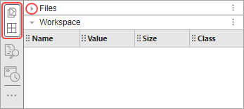
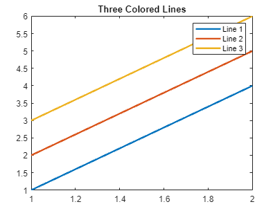
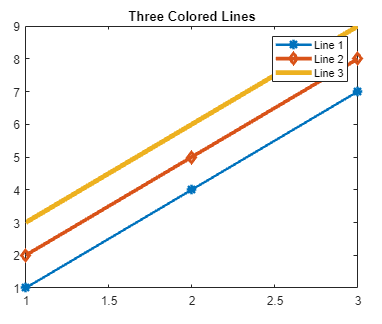
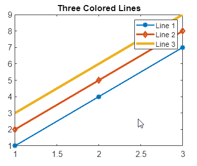
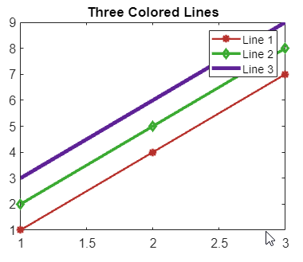

Accessibility in MATLAB
MATLAB® provides several features to help make it accessible to users. You can use keyboard shortcuts to navigate MATLAB using just a keyboard. You can use a screen reader and a keyboard to interact with the different tools in MATLAB. To make the desktop more visible, you can zoom in, change its colors, or increase the clarity of plots. You can also use data sonification to explore and interpret data by sound.
MathWorks® is committed to improving the accessibility of its software products. See our Accessibility Statement for MATLAB for the latest information on accessibility support.
Before R2025a: For our best accessibility support, use MATLAB Online™.
Navigate Using Keyboard
You can navigate MATLAB with just a keyboard by using keyboard shortcuts.
To move forward through the different areas of the MATLAB desktop, press Ctrl+F6. To move backward, press Ctrl+Shift+F6. On macOS systems, use the Command key instead of the Ctrl key. To move into a tool, for example, into the current toolstrip tab, press Tab. To display a list of navigational keyboard shortcuts, press Ctrl+/.
For more information, see Use Keyboard Shortcuts to Navigate MATLAB.
Work with Screen Reader
You can use a screen reader and a keyboard to interact with the Command Window, create and edit scripts, live scripts, and functions in the Editor and Live Editor, and navigate through the different areas of the MATLAB desktop.
For example, on a Windows® system with the NVDA screen reader and MATLAB running, enter individual statements in the Command Window.
With the cursor in the Command Window, create a variable named
xby entering this statement in the Command Window.x = 1
MATLAB adds
xto the workspace and displays the results in the Command Window. You hear:X equals one Ready prompt One variable added to workspace
When you hear
Ready prompt, the Command Window is ready for the next statement at the command-line prompt (>>).Create another variable
yby entering this statement in the Command Window.y = cos(x)
You hear the results:
Y equals zero point five four zero three Ready prompt One variable added to workspace
Move the cursor to the Command Window scroll buffer region to hear the last output again by pressing Shift+Tab. You hear:
Scroll buffer region Y equals zero point five four zero three
Move the cursor back to the command-line prompt by pressing Shift+Tab. You hear:
Ready prompt
Clear all text from the Command Window by entering this statement in the Command Window.
clc
You hear:
The Command Window is ready for the next statement.Ready prompt
For more information, see Use Screen Reader with MATLAB.
Adjust Zoom Level
To adjust the zoom level of the Editor and Live Editor, use the Ctrl+Mouse Scroll keyboard shortcut or the Ctrl+Plus (+) and Ctrl+Minus (–) keyboard shortcuts. To reset the zoom level, use the Ctrl+Alt+0 keyboard shortcut. On macOS systems, use the Command key instead of the Ctrl key.
In MATLAB Online, you can zoom in and out of the entire desktop by adjusting the zoom settings for your web browser.
For more information, see Zoom and Change Desktop Fonts.
Maximize Focus Area
To maximize the space for your current area of focus, hide or minimize the panels that you are currently not using. To hide a panel, click its icon on the sidebar. For example, if the MATLAB desktop is in the default layout with the Files panel and Workspace panel open on the left side of the desktop, you can hide both panels by clicking the icon group for the two panels in the left sidebar. If two or more panels are grouped together, you can minimize each individual panel by clicking the Collapse button to the left of its title bar.

For more information about minimizing panels, see Configure the Desktop.
Change MATLAB Desktop Colors
You can use themes to change the colors of
the MATLAB desktop. To select a theme, in the Command Window, enter
preferences Appearance to open the Settings window with the
MATLAB Appearance Settings page selected. Then, select a theme from the
Desktop Theme list. (since R2025a)
For example, select Dark to select the dark theme. The
MATLAB Appearance Settings page shows a preview of the selected theme.

After selecting a theme, you can further customize the colors of the MATLAB desktop by changing the text and background colors:
In the Command Window, enter
preferences Colorsto open the Settings window with the MATLAB Appearance Colors Settings page selected.Use the Text and Background fields to change the colors. For example, select white for the text color and black for the background color.
Before R2025a: Select MATLAB > Colors and in the Desktop tool colors section, clear the Use system colors check box to enable the Text and Background fields.
The Syntax highlighting sample and Command Window sample areas show a preview of the selected colors.

To restore the default text and background colors for the selected theme, click the Restore Default Colors button at the bottom of the Settings window.
For more information about the different ways to change the desktop colors in MATLAB, see Change Desktop Theme and Colors.
Increase Clarity of Plots
You can increase the clarity of plots in MATLAB by changing the color and size of markers, lines, and text within the
plots. To change the color and size of markers, lines, and text, modify the
properties of the plot. The list of properties for a plot depends on its object
type. For more information, see the documentation for the plot function you are
using. You also can use the colororder function
to change the color palette used for the markers and lines within the plots.
For example, create a plot with three lines.
p = plot([1 2 3; 4 5 6],LineWidth=22) title("Three Colored Lines") legend("Line 1","Line 2","Line 3")

Enhance the distinction between the three lines using the
LineWidth, Marker,
MarkerEdgeColor, and MarkerSize
properties. For more information, see Line Properties.
p(1).LineWidth = 2; p(1).Marker = "*"; p(1).MarkerEdgeColor = "b"; p(1).MarkerSize = 8; p(2).LineWidth = 3; p(2).Marker = "diamond"; p(3).LineWidth = 4;

To change the font size for objects in a plot, you can use the fontsize function. For example, increase the font size of the title,
legend, and axes labels in the plot until they are more easily
readable.
fontsize(gcf,"increase") fontsize(gcf,"increase") fontsize(gcf,"increase")

To improve the contrast of lines and markers within a plot, you can use the
colororder function and specify the "dye" color
palette. The colors of the "dye" palette meet international
contrast ratio standards for enhanced accessibility against a white background. For
example, specify the "dye" color palette for the plot.
colororder("dye")
Convert Data to Sound Using Sonification
You can convert data to sound using the sonify function. For example, convert a vector of sine values to
sound and return the sonified data s and sample rate
Fs.
y = sin(1:10); [s,Fs] = sonify(y);
You can use the sonified data with the audioplayer function to play,
pause, resume, and stop the sound. You also can write the sonified data to a WAV
file using the audiowrite function.